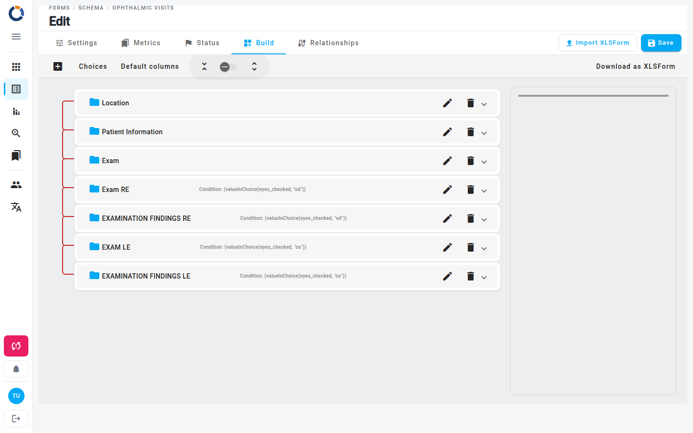

Modifier le schéma de formulaire
La page Modifier le schéma de formulaire vous permet de créer un nouveau schéma de formulaire ou de modifier un schéma existant. Vous y définissez les attributs généraux du formulaire, gérez ses statuts et ses métriques, contrôlez sa visibilité, le reliez à d'autres schémas de formulaire et construisez les questions auxquelles vos utilisateurs répondront.
Vous pouvez accéder à cette page en :
- Cliquant sur le bouton + (Ajouter un nouveau schéma de formulaire) en bas à droite de la vue d'ensemble des formulaires pour construire un nouveau schéma.
- Sélectionnant Modifier sur la carte d'un schéma existant ou depuis sa vue détaillée.
Le fil d'Ariane en haut indique votre position actuelle (par exemple, Formulaires / Schéma / Mon enquête / Modifier).

L'éditeur est organisé en onglets — Paramètres, Métriques, Statut, Construire et Relations. Les boutons Enregistrer et Importer XLSForm restent visibles sur la ligne d'onglets, ce qui vous permet d'enregistrer votre travail depuis n'importe quel onglet.
Onglet Paramètres
L'onglet Paramètres contient les métadonnées et la configuration générale du questionnaire.
| Champ | Description |
|---|---|
| Nom du formulaire | Un identifiant système unique (par exemple, survey_2025). Dino vous avertit si le nom est déjà utilisé. |
| Étiquette du formulaire | Le nom lisible par l'utilisateur affiché dans les listes et les rapports. |
| Ensemble d'icônes | Choisissez Défaut (icônes material) ou Humanitarian (icônes SVG personnalisées). |
| Icône de formulaire | Sélectionnez une icône dans la liste de saisie semi-automatique. L'aperçu à côté du champ se met à jour en direct. |
| Visibilité | Privé — seuls les utilisateurs Dino autorisés à soumettre peuvent envoyer des données à ce schéma de formulaire. Public — toute personne disposant du lien peut soumettre. Voir formulaires publics pour plus de détails. |
| Générer un rapport | Lorsque cette option est sur Oui, Dino génère automatiquement un rapport pour le formulaire. Si un rapport existe déjà, cette option est verrouillée sur Oui ; pour la désactiver, supprimez d'abord le schéma et les données du rapport. Voir Rapports automatiques pour plus de détails. |
Accédez directement aux questions
Cliquez sur Aller à la construction en bas de l'onglet Paramètres pour ouvrir immédiatement l'onglet Construire.
Onglet Métriques
Dans l'onglet Métriques, vous choisissez quelles métriques s'appliquent à ce questionnaire et comment elles se comportent.
- Formez des métriques — les métriques à collecter pour chaque donnée. Sélectionnez-en une ou plusieurs dans la liste.
- Comportement du jeu de métriques — Défaut permet à chaque valeur de métrique d'apparaître plusieurs fois dans les données. Unique permet à une valeur de métrique (par exemple, le nom d'un district) d'être utilisée une seule fois par formulaire.
- Métriques à inclure dans le formulaire — sélectionnez les métriques dont les données doivent être incluses dans le formulaire.
- Métriques incluses comme options de choix — ajoutez une ligne par métrique que vous souhaitez exposer comme origine de choix. Pour chaque ligne, choisissez la métrique, listez éventuellement des attributs supplémentaires à reporter dans le choix, et ajoutez une condition de filtre si vous souhaitez restreindre les options disponibles. La nouvelle origine de choix est nommée
$metricName_metric_choice.
Comportement du jeu de métriques Unique
Utilisez Unique avec prudence — une fois qu'une valeur est utilisée pour une métrique, elle ne peut plus être réutilisée dans une autre donnée du même schéma de formulaire.
Onglet Statut
Dans l'onglet Statut, vous définissez les statuts qu'une donnée de ce questionnaire peut avoir (par exemple Brouillon, Approuvé, Rejeté).
- Cliquez sur le champ Statuts des formulaires pour développer la liste.
- Pour ajouter un statut existant, sélectionnez-le dans la liste.
- Pour créer un nouveau statut, cliquez sur Créer un nouveau statut. Une boîte de dialogue s'ouvre où vous pouvez saisir une étiquette, choisir une couleur et enregistrer.
- Pour modifier un statut existant, cliquez sur l'icône Modifier (crayon) à côté de celui-ci.
- Cliquez en dehors de la liste déroulante pour la fermer.
Vous pouvez également associer un niveau à chaque statut afin d'établir un ordre. Lorsqu'une nouvelle donnée de formulaire est créée, elle reçoit le statut dont le niveau est le plus bas.
Onglet Construire
L'onglet Construire contient le constructeur de formulaire, où vous faites glisser, déposez et configurez les champs, les diapositives et les sections individuels. Les modifications sont immédiatement reflétées dans l'aperçu. Utilisez cet onglet pour définir les questions auxquelles les utilisateurs répondront réellement.
Onglet Relations
Les relations extraient des valeurs de champ ou des choix d'autres schémas de formulaire vers celui-ci — par exemple, un sous-formulaire qui dépend d'un choix effectué dans le formulaire principal.
- Ouvrez l'onglet Relations.
- Cliquez sur Ajouter une relation avec d'autres formulaires.
- Dans la nouvelle ligne, choisissez le Formulaires à partir duquel extraire, puis sélectionnez les Champs à importer dans ce formulaire.
- Choisissez éventuellement une ou plusieurs valeurs de Métrique pour filtrer la relation.
- Pour utiliser un seul champ comme option de choix, activez Champ comme option, puis choisissez le Champ libellé et, si nécessaire, un Champ supplémentaire.

Enregistrez d'abord
L'onglet Relations et les sections de données de métriques nécessitent un schéma de formulaire enregistré. Tant que vous créez encore un schéma, ils restent verrouillés avec le rappel Enregistrez d'abord le formulaire pour ajouter des relations.
Enregistrer et importer
- Enregistrer — conserve toutes les modifications. Le bouton est désactivé tant que le formulaire est invalide ou en cours d'enregistrement.
- Importer XLSForm — ouvre une boîte de dialogue où vous faites glisser un fichier XLSForm ou cliquez sur Choisir un fichier (
.xlsou.xlsx; le fichier doit contenir les feuilles survey, choices et settings), puis cliquez sur Appliquer pour le charger dans l'éditeur. Utilisez cette option pour réutiliser la structure d'un schéma provenant d'un autre projet. Rien n'est stocké tant que vous n'avez pas cliqué sur Enregistrer.